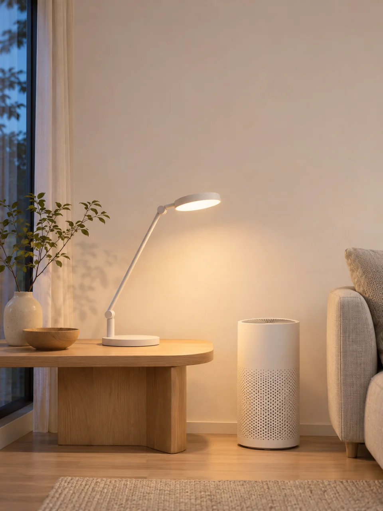
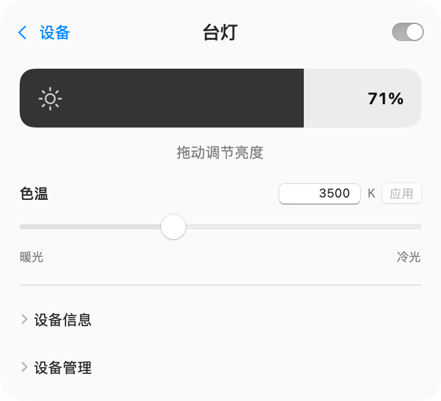
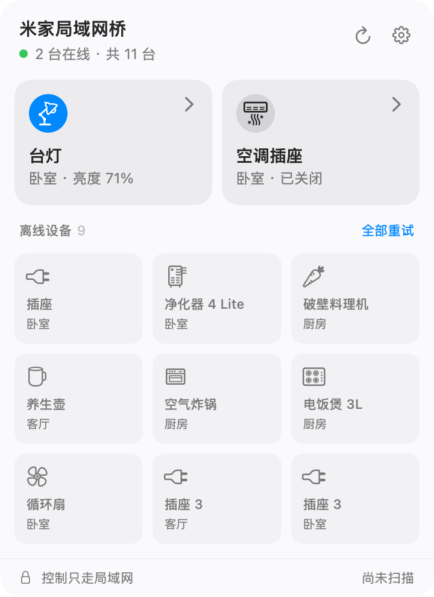

米家局域网桥
米家设备，接入 Apple 家庭。
从 Mac 菜单栏开灯、调亮度。控制指令通过局域网直接发给米家 Wi‑Fi 设备。
macOS 15 及以上 Apple Silicon 与 Intel


- 设备控制走局域网
- 凭据保存在本机钥匙串
- MIT 开源

02 Apple 家庭桥接
用 Siri，
关掉米家台灯。
在 Mac 上选择要桥接的设备，再用 iPhone 的「家庭」扫码配对。配对后，也能在 Apple Watch 上控制设备，或把它们加入家里的场景和自动化。
03 如何使用
从导入到控制，三步。
-
导入设备
在 Mac 上打开 MijiaLAN，用米家 App 扫码导入设备，也可手动填入 IP 和 token。
-
从菜单栏试试
让 Mac 和设备连上同一局域网。在菜单栏打开面板，试着开灯或调节亮度。
-
接入 Apple 家庭
开启桥接、选好设备，再用 iPhone 的「家庭」扫描桥接二维码。
macOS 正式版
v0.1.8 · Universal DMG · macOS 15+
常见问题
支持哪些米家设备？
主要支持可在局域网直连的米家 Wi‑Fi 设备，包括部分灯具、插座、风扇、空调和净化器。具体型号和可用功能见设备支持说明。
日常使用需要外网吗？
设备导入并缓存所需规格后，日常控制可以在局域网完成。用米家 App 扫码导入设备，以及获取尚未缓存的设备规格时，需要联网。
Mac 休眠后，还能用「家庭」控制吗？
桥接时需要让 Mac 保持唤醒，并让 MijiaLAN 在后台运行。要从家外访问，或让家庭自动化运行，还需要 HomePod 或 Apple TV 等家居中枢。